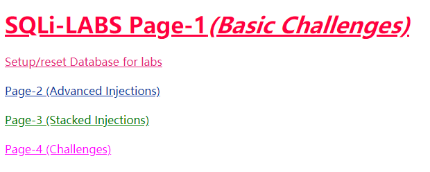
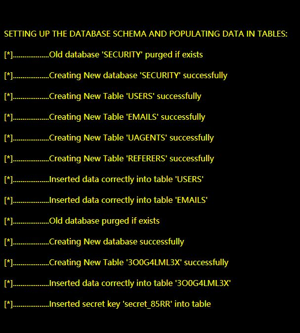
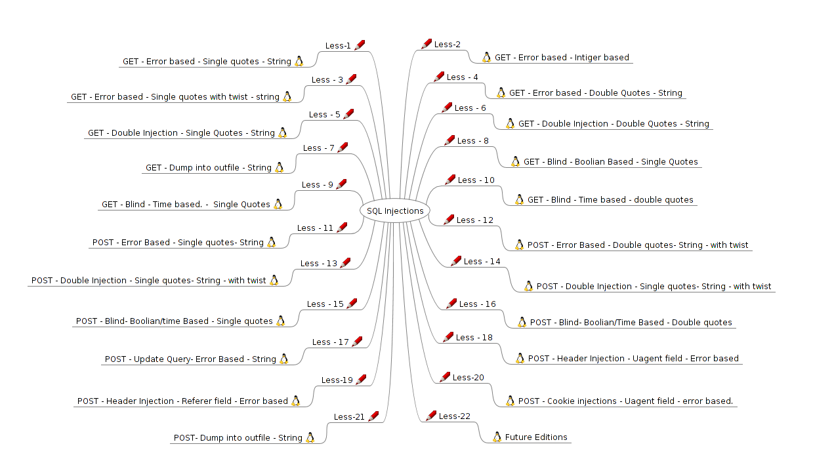
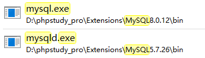
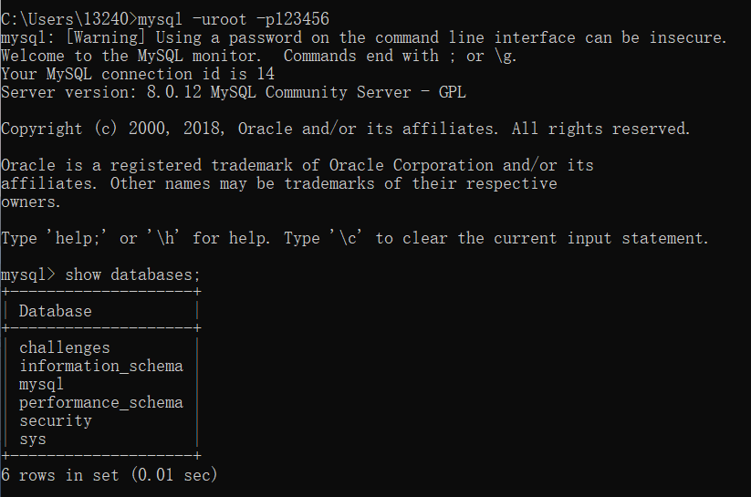

SQL注入环境搭建踩坑指南
使用《Web安全攻防》中配套的SQL注入平台来搭建
一般流程
- 先下载zip，解压密码找了好长时间，在这个视频里https://pan.baidu.com/s/15F1SEoHZYoWxPE8iMqkqAQ
提取码：zqbo
我使用的是phpstudy，平台只需要开启Apache和MySQL服务即可
在phpstudy的
WWW/127.0.0.1/下新建一个sql1文件夹（不建当然也可以，后面按照对应路径来）然后把解压出来的sqli-labs-master文件夹下所有文件全部添加到sql1文件夹下
开启MySQL服务（不开启就无法创建数据库，MySQL版本好像无影响），然后点击phpstudy的数据库，先修改root用户的密码，再创建一个库名为security的数据库
点击操作，导入，选择sql-lab.sql文件导入
打开sql-connections文件夹的db-creds.inc文件，需要修改的就两个地方
$dbuser ='root'; $dbpass ='your pass';在开启Apache和MySQL的情况下，访问127.0.0.1/sql1成功则出现

点击
Setup/reset Database for labs,如果出现
则建立成功
此时返回127.0.0.1/sql1，点击下图的题目就可开始体验SQL注入的乐趣

可能出现的问题
点击Setup/reset Database for labs时可能出现错误
`Fatal error: Uncaught Error: Call to undefined function mysql_connect() in D:\phpstudy_pro\WWW\127.0.0.1\sql1\sql-connections\setup-db.php:29 Stack trace: #0 {main} thrown in D:\phpstudy_pro\WWW\127.0.0.1\sql1\sql-connections\setup-db.php on line 29
这是因为php版本过高，高版本的php修改了一些对mysql的操作
解决方案：在phpstduy中将php7，修改为php5（网站- >管理- >php版本）
无法purge和create challenges数据库
报错如下
[*]……………….Error purging database: Access denied for user ‘user’@’localhost’ to database ‘challenges’
[*]……………….Error creating database: Access denied for user ‘user’@’localhost’ to database ‘challenges’
Unable to connect to the database: challengesAccess denied for user ‘user’@’localhost’ to database ‘challenges’
解决方案：修改sql-connections文件夹的db-creds.inc文件 $dbuser ='root';
mysql添加至环境变量
win10下
- 查找phpstudy文件夹Extensions文件夹下的
mysql.exe(版本不同，名字也不同)

复制绝对路径
桌面点击此电脑–属性–高级系统设置–环境变量–选中Path–编辑–新建–粘贴
打开cmd在命令行输入mysql（mysql服务当然要是开启状态）
不出意外会出现
ERROR 1045 (28000): Access denied for user 'ODBC'@'localhost' (using password: NO)
命令行输入mysql -uroot -p或mysql -hlocalhost -uroot -p
然后输入密码即可（密码也可以直接跟在-p之后，不加空格的那种）

上面的代码用以显示当前用户权限范围以内的数据库，可以看到security和challenges已经存在了
玩的愉快(•‾̑⌣‾̑•)✧˖°